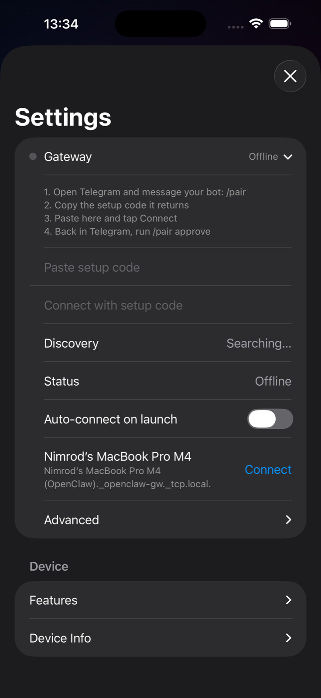

AI agent correction / LLM supervision
VeriClaw 爪印
Role-drift diagnosis and intervention on Apple-native surfaces.
Designed for the moment a bot drifts,
hallucinates, or fake-completes.
Move from evidence to diagnosis, intervention, verification, and casebook learning.
Evidence-first
Catch the moment
Intervention
Choose next action
Verification
Prove the fix held



OpenClaw companion
Correction, not just monitoring.